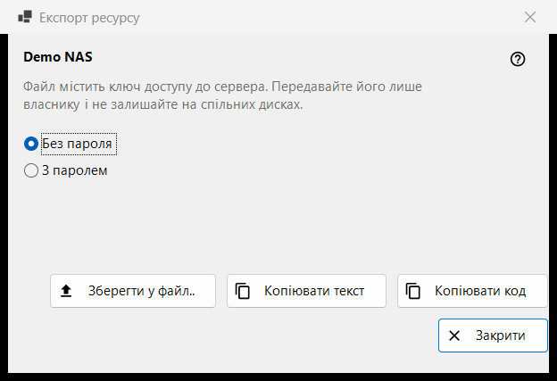
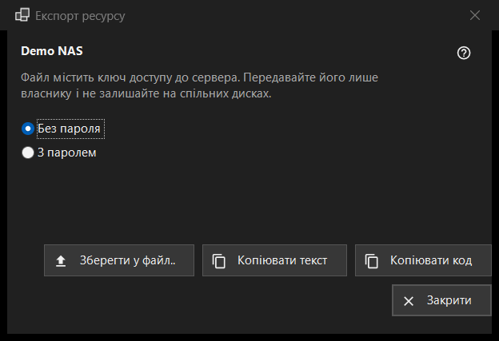

Експорт ресурсу
Призначення
Готує налаштування одного SFTP-сервера, щоб інший комп'ютер або телефон міг їх імпортувати. Вікно відкривається пунктом «Експорт..» у меню «Ще» списку ресурсів і потребує вибраного ресурсу; спільну папку Share Manager експортують із самого Share Manager.


Порядок дій
- Прочитайте попередження під назвою ресурсу.
- Виберіть «Без пароля» (за замовчуванням) або «З паролем».
- Натисніть «Зберегти у файл..» або скопіюйте налаштування текстом чи коротким кодом.
- Передайте результат лише його власнику.
Елементи вікна
Попередження
Рядок під назвою попереджає, що файл містить ключ доступу до сервера: передавайте його лише власнику й не залишайте на спільних дисках. Це стосується і файлу, і скопійованого тексту, і коду.
Без пароля або з паролем
Спочатку вибрано «Без пароля». «З паролем» доступне, лише якщо збережений пароль вдається прочитати; інакше показується підказка «Пароль не збережено - файл буде без пароля.» Пароль розшифровується в пам'яті на час експорту й більше нікуди не потрапляє.
Зберегти, копіювати текст, копіювати код
«Зберегти у файл..» записує файл .fmscfg через діалог збереження; запис відмовляє на дисках FAT і exFAT, на мережевих дисках і в теках, які можуть змінювати інші користувачі, і ніколи не залишає наполовину записаний файл. «Копіювати текст» кладе в буфер документ налаштувань, «Копіювати код» - короткий код із тим самим вмістом. Обидва копіюються з позначками приватності (без історії буфера обміну й хмарної синхронізації). Результат видно в рядку стану.
Що можна експортувати
Лише SFTP-сервер, ключ якого переглядач уже запам'ятав. Вікно відкривається в будь-якому разі, а відмова з'являється в рядку стану після натискання кнопки: мережеву папку (SMB) цей файл описати не може; ключ сервера не запам'ятовано (відкрийте ресурс один раз і підтвердьте ключ); у ресурсу немає адреси, яку можна передати; тека записана так, що файл її не приймає (виправте через «Змінити..»).